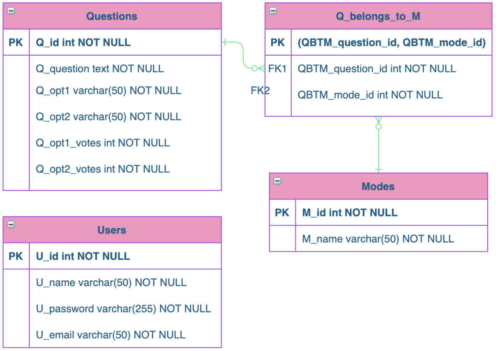
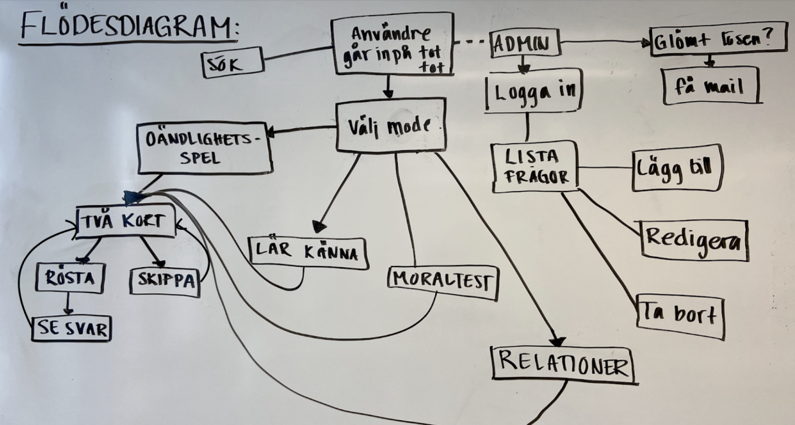

Web app
Tottot opinion game
Developing front end, back end and databases to create a web application for an online quiz game.
Role
Full stack
Deliverable
Web application
Timeframe
1.5 months and going

Web app
Developing front end, back end and databases to create a web application for an online quiz game.
Role
Full stack
Deliverable
Web application
Timeframe
1.5 months and going
This project started as a course project in Database Technology and webbased systems, but is now something that my teammates and I work on on our freetime. The originial application was built with Codeigniter, but is now being rebuilt with React, Node.js and Express. The application is getting a total makeover visually as the current one was built with full focus on the backend, and therefore this case do not include any screenshots of the GUI. This project will be updated when the new version comes live.
There are plenty of party games out there, but many has the sole purpose to get drunk, or require so much focus on the game that you hang out with the game more than with each other. We wanted to create a game that created fun and interesting discussions.
Our product is a simple quiz app, but without any right or wrong answers. Every question is about personal preferences or opinions. The user choses one of four categories to start the game and is then presented with one question at a time. The questions range from "Do you believe in life after death" to "Do you fold or crumple your toilet paper?" and the user always have two answers to chose between. They can also skip the question. After answering they can see how others have answered. This makes it possible for further discussion. If the user just want to browse others opinions without playing the game, they can chose to list all questions. In this view, they can search, sort and filter all questions.
Apart from the public website, we also built an admin page where we can sign in to add, edit and delete questions.
The application was named "tottot", where "tot" is a abbreviation of "this or that".
This project was the first database project any of us had done, and neither one of us had much experience in web development. We had to use a MVC structure and heard about Codeigniter, so that was what we chose to use.
Before any code was written, we brainstormed and designed the structure of the application and the database. We began with the database containing all questions, modes (categories) and admin users.
ER-schema of tottot database
We also made some sketches of flow diagrams on how the user where to interact with the application.
Flow diagram
The final product is a fully functional application, but since we made this as beginner web developers it does have some flaws. The security regaring sessions could be improved, as could the general logic and flow of the game. After learning more about the development tools out there, we came to the conclusion that Codeigniter is not the one we want to use.
up